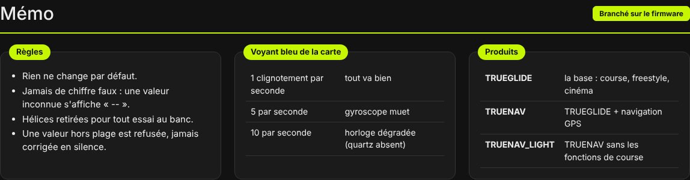
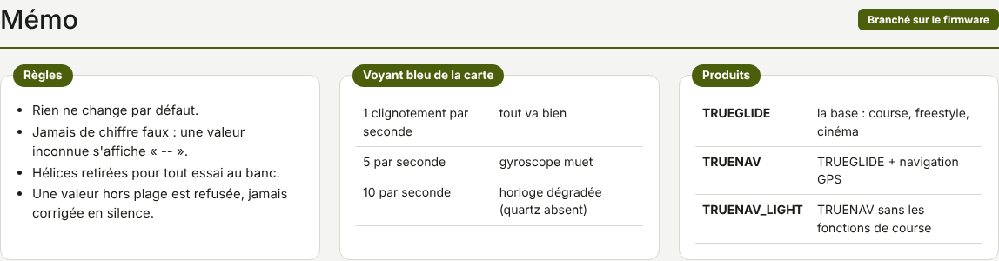

TRUEGLIDE
TRUEGLIDE Mémo
L'onglet Mémo (groupe Outils) rassemble ce qu'il faut avoir en tête en permanence avec XPro : les règles du logiciel, le voyant de la carte, les produits.


Règles
- Rien ne change par défaut : une nouvelle version ne modifie pas le comportement d'un drone déjà réglé.
- Jamais de chiffre faux : une valeur inconnue s'affiche « -- », jamais une valeur supposée.
- Hélices retirées pour tout essai au banc.
- Une valeur hors plage est refusée, jamais corrigée en silence.
Voyant bleu de la carte
| Clignotement | Signification |
|---|---|
| 1 par seconde | tout va bien |
| 5 par seconde | gyroscope muet |
| 10 par seconde | horloge dégradée (quartz absent) |
Dans les deux derniers cas, faire un rapport de banc.
Produits
| Produit | Pour |
|---|---|
| TRUEGLIDE | la base : course, freestyle, cinéma |
| TRUENAV | TRUEGLIDE + navigation GPS |
| TRUENAV_LIGHT | TRUENAV sans les fonctions de course |